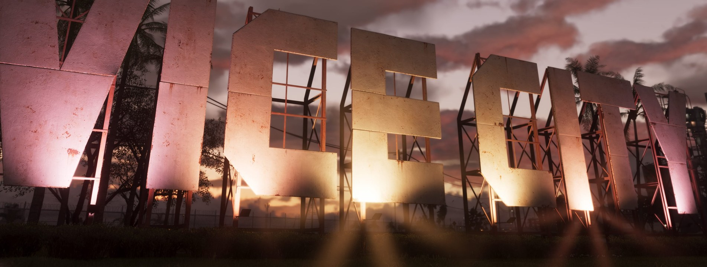
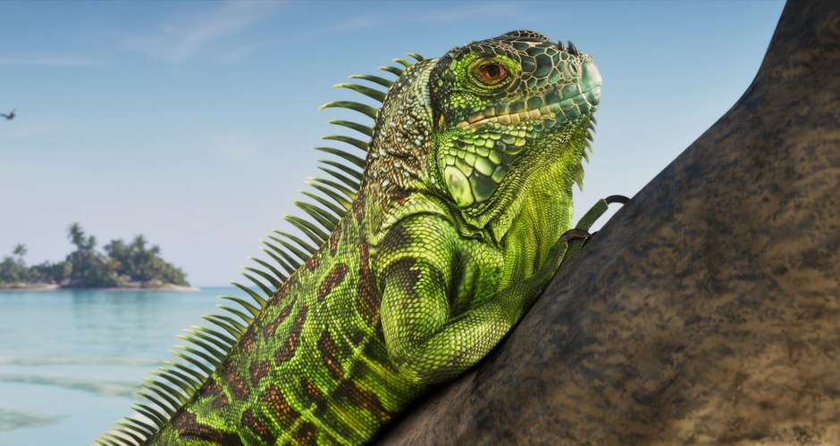

Mezi GTA V a GTA VI jsme udělali
Kolik jich stihneme do GTA VII?
Tipni si do komentářů.
VeganFest 2027 už je ohlášený – na ten nemusíš čekat 13 let.
VeganFest 2027 už je ohlášený – na ten nemusíš čekat 13 let.